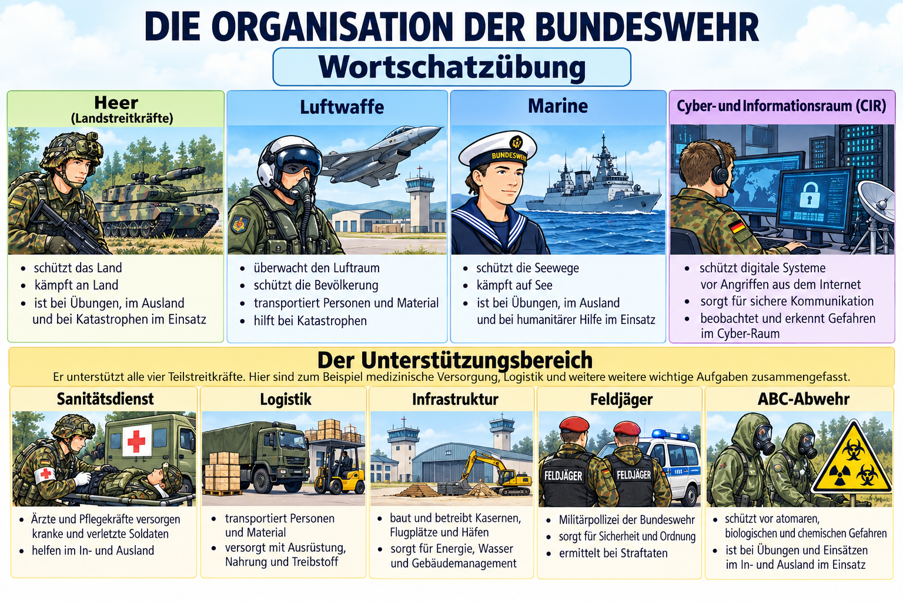

Die Organisation der Bundeswehr
Wortschatzübung · 20 Fragen

Wörter einsetzen
Lesen Sie die Fragen und ergänzen Sie die passende Antwort. Verwenden Sie die Wörter und Ausdrücke aus der Wortbox. Jedes Wort passt einmal.
Wortschatzübung · 20 Fragen

Lesen Sie die Fragen und ergänzen Sie die passende Antwort. Verwenden Sie die Wörter und Ausdrücke aus der Wortbox. Jedes Wort passt einmal.